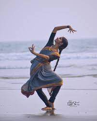

Dance,it is a popular art form.Dance is a performing art form consisting of sequences of movement, either improvised or purposefully selected. This movement has aesthetic and often symbolic value. dance, the movement of the body in a rhythmic way, usually to music and within a given space, for the purpose of expressing an idea or emotion, releasing energy, or simply taking delight in the movement itself.
Dance is also a way of expression.Dance its one of the impact full form to express your feelings and emotions. Every tribe and every group of pepole have their own dance form through which they express their joy, happiness or sometimes sorrow Many of them even offer their prayers in the form of dance. It has been a great medium to make other people understand the situation.
Dance is a powerful impulse, but the art of dance is that impulse channeled by skillful performers into something that becomes intensely expressive and that may delight spectators who feel no wish to dance themselves. These two concepts of the art of dance—dance as a powerful impulse and dance as a skillfully choreographed art practiced largely by a professional few—are the two most important connecting ideas running through any consideration of the subject. In dance, the connection between the two concepts is stronger than in some other arts, and neither can exist without the other.
ABC Dance school was established in year 2000. It was established to bring out the talent in todays generation kids and also to make them understand about the immporatance of dance. ABC Dance school wants to bring out the intrest and passion for dance in childern. To teach the how to dance to express their feelings
To also tell about the different dance forms, their origin, and their importance. And save them from vanishing.